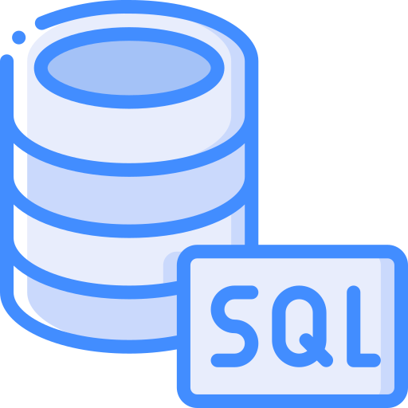
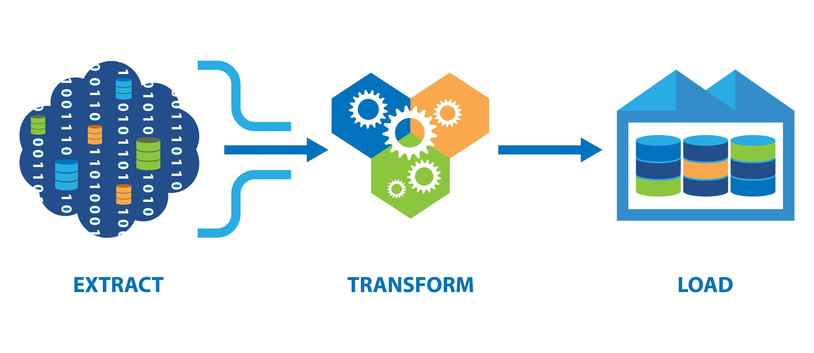

Sobre mim
Sou formado em Sistemas de Informação e pós-graduado em Data Science, atuando com Business Intelligence, Analytics e Engenharia de Dados. Meu foco é transformar dados em ativos estratégicos para o negócio, desenvolvendo soluções completas de BI — desde a preparação e integração dos dados até a construção de indicadores executivos para apoio à tomada de decisão.
Ao longo da minha trajetória participei de projetos envolvendo implantação SAP S/4HANA, plataformas analíticas, integração de APIs, Data Lake, Power BI, SQL, Python e Apache Airflow, sempre buscando gerar valor por meio dos dados.
Cases Profissionais
-


Gestão de Testes Integrados SAP
Plataforma analítica para acompanhar a execução dos Testes Integrados de uma implantação SAP S/4HANA, com indicadores de produtividade, defeitos e a lógica de "Passo da Vez".

-
Otimização de Custos de Licenciamento ERP
Plataforma para identificar oportunidades de redução de custos com licenciamento SAP, com pipeline automatizado em Python e Apache Airflow.

-
Governança Executiva da Implantação SAP
Dashboards executivos para acompanhamento de cronograma, riscos, capacidade das equipes e Cutover de uma implantação SAP S/4HANA.

-
Gestão de ROI Comercial
Monitoramento executivo do retorno sobre investimentos comerciais, com dados do Salesforce processados via Apache Airflow.

-

Gestão de Chamados de TI (Jira)
Plataforma analítica de performance de TI a partir de dados do Jira, com indicadores de MTTA, MTTR e SLA.

-
Gestão Financeira da Implantação SAP
Centralização do controle financeiro de uma implantação SAP, com visão executiva de orçamento, saldo disponível e forecast.

Artigos
-

Como começar na Análise de Dados: Ferramentas e Técnicas Essenciais
Este artigo explora as principais ferramentas e técnicas indispensáveis para quem está começando na análise de dados. Aborda o uso de Excel, Power BI, SQL e Python, oferecendo uma visão prática sobre como desenvolver habilidades fundamentais.

-
Compreendendo os Processos ETL: Essenciais para a Análise de Dados
O artigo explica o processo ETL (Extração, Transformação e Carregamento), detalhando suas etapas e importância. Inclui exemplos práticos, ferramentas úteis e boas práticas para uma implementação eficaz.
